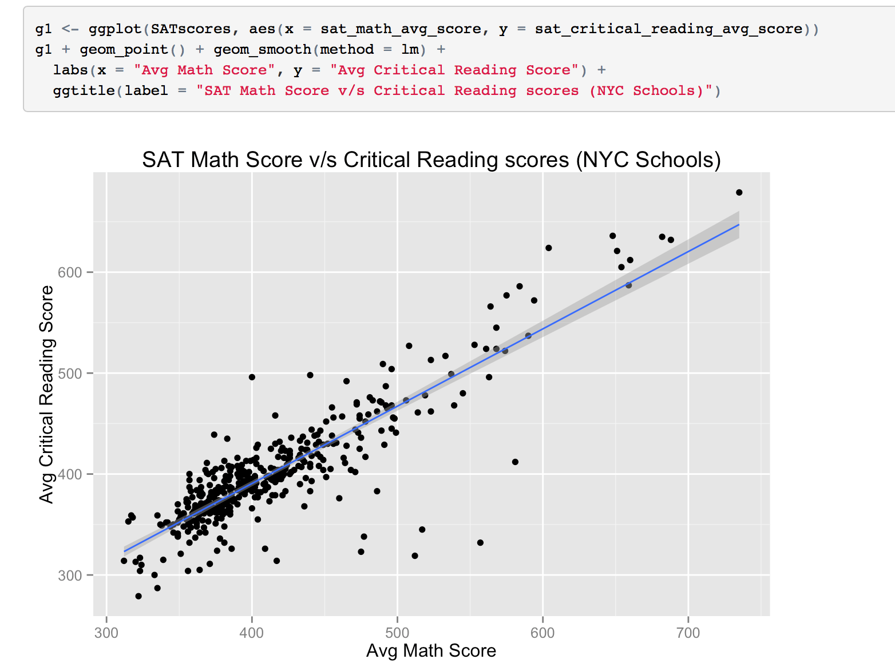
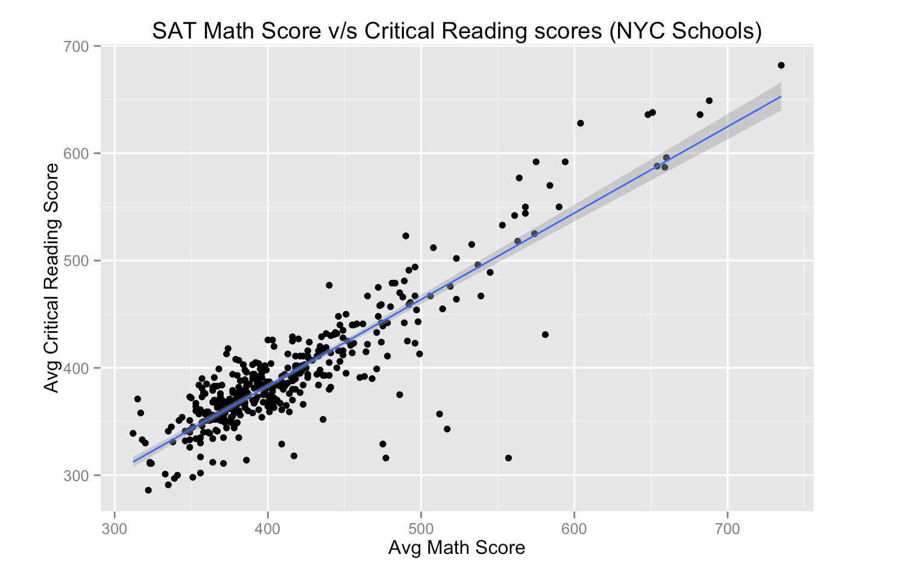
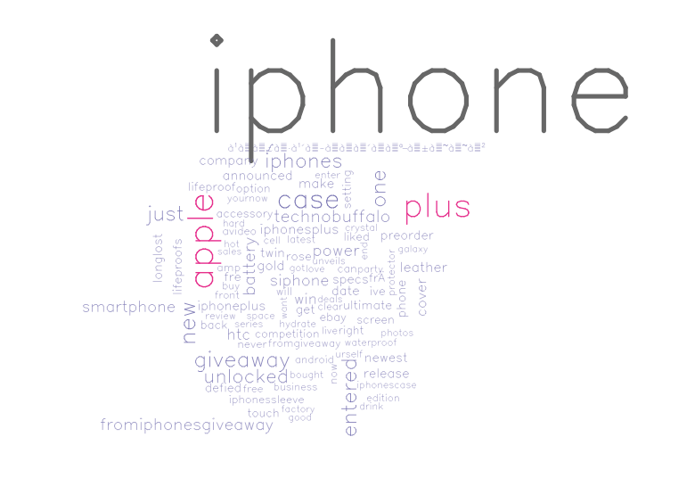
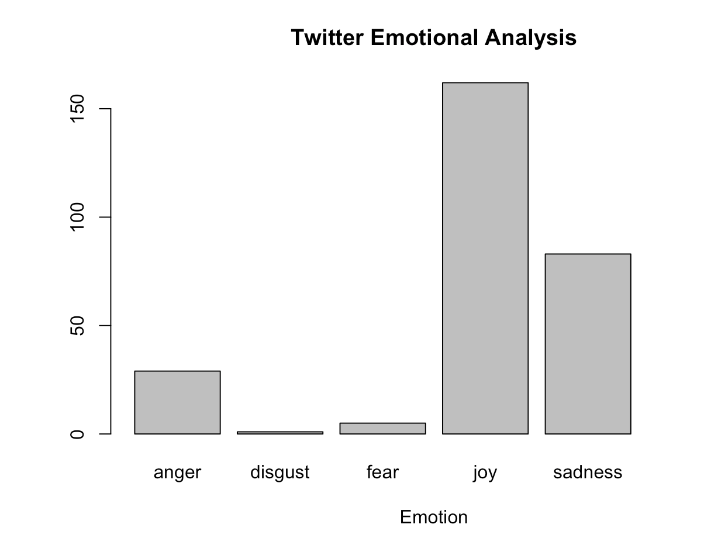

NYC Flight Analysis


- Performed exploratory data analysis to find what are the seasonal and daily trends in flight delays.
- Used co-relation matrices and p-value test to figure what variables actually affect the flight performance index/delay across the year 2013
- Suggested reasons for the pattern discovered during this process
In this problem set I used the data on all flights that departed NYC (i.e. JFK, LGA or EWR) in 2013. One can find this data as part of the 'nycflights13' R package. Data includes not only information about flights, but also data about planes, airports, weather, and airlines.
NYC School SAT score


- Created linear model to show trends between different sections of the SAT test in each school
- Analyzed the top 5 schools to be in NYC for a great SAT score.
Analysis of trends in SAT scores across all schools in NYC. Finding trends in different sections of the SAT exam and figuring the top 5 schools in NYC to increase the probability of getting great SAT scores.
Used R to extract JSON data of all school’s SAT data from https://nycopendata.socrata.com website
Twitter Sentiment Analysis


- Used TwitteR package inside Twitter to pull tweets containing a certain word/phrase
- Created 'Sentiment' function inside R to analyse each tweet and attaching an emotion that the tweet showcases.
- Created a wordcloud including the most frequent words found in those tweets.
- This project can be used to find any word and any number of tweets (As permitted by the Twitter API by just changing 2 words in the code).